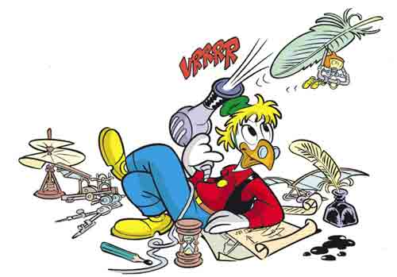

Da piccolo ero abbonato a Topolino e fra i miei personaggi preferiti c’era Archimede Pitagorico, l’inventore geniale amico di Paperino sempre pronto con una nuova idea per salvare la situazione.
Se vivesse nel nostro mondo, sono sicuro che userebbe la piattaforma Kickstarter e in poco tempo diventerebbe ricco quasi come Paperon de’ Paperoni.
Se fin qui vi siete posti qualche domanda, allora probabilmente non avete mai letto Topolino o non avete idea di cosa sia Kickstarter.
Nel primo caso vi consiglio di rimediare (un abbonamento non costa nemmeno troppo); nel secondo invece restate sintonizzati, perché ve lo spiegherò qui di seguito. Se invece vi sono sorte domande personali scrivetemi pure, mi piace chiacchierare.

Kickstarter (traducibile grossomodo come “calcio d’inizio”) è una piattaforma dove progetti di varia natura possono concretizzarsi tramite il libero finanziamento degli utenti (il così detto “crowdfunding”). Gli ambiti di cui tratta il sito spaziano dall’arte al cibo, passando per progetti di ingegneria, videogiochi e iniziative sociali. Qualsiasi cosa possiate pensare, Kickstarter può dare una mano a renderla realtà.
Ma, ovviamente, quello che più ci interessa comprende i giochi da tavolo e di ruolo.
Come per tutti i progetti, alcune idee sono buone, altre decisamente meno, mentre altre ancora sarebbero carine in teoria, ma sono presentate male (e dunque vanno perdendosi nel marasma di titoli mediocri e sotto-performanti).
Alla fine, un progetto, per guadagnarsi la fiducia (e i denari) degli utenti, deve apparire bello, buono e bravo. Nella grande competizione che è la ricerca di fondi, solo i migliori e i più meritevoli sopravvivono.
E questa è un’ottima cosa.
Ogni progetto Kickstarter ha una pagina dedicata, in cui il promotore illustra la componentistica e il regolamento che il gioco avrà. Spesso, copie dimostrative vengono inviate a vari youtuber così che ne facciano recensioni, li giochino dal vivo, facciano osservazioni e, soprattutto, diano loro una copertura che sia utile ad aumentare le donazioni.
Ma voi direte… in questo mondo di ladri, qualcuno regalerebbe soldi solamente perché un’idea diventi realtà, senza ottenerne nulla in cambio? Non sarebbe meglio aspettare che siano altri a farlo, e acquistare il titolo poi?
Beh, nì.
Ufficialmente i “pledge” (gli “impegni”, o meglio le “quote” che vengono versate dagli investitori) sono nobili propositi senza alcun tornaconto... ma di fatto il sito permette ai promotori di un progetto di offrire dei “premi” a chiunque doni un certo ammontare di risorse. Ad esempio, se si è donata una certa somma si può ricevere una copia del gioco e, se si è donato un po’ di più, se ne può ricevere la versione deluxe, strapiena di contenuti che non si potranno altrimenti reperire sul mercato.
Nella maggior parte dei casi, le ricompense arrivano effettivamente (solitamente dopo svariati mesi, perché il gioco va materialmente prodotto e distribuito), anche se a volte ci sono dei ritardi più o meno epici.
Molto raramente, può anche capitare che si vada incontro a dei fallimenti colossali. In casi come questo, occorre ricordare che la piattaforma è pur sempre un mezzo per raccogliere fondi, e non il sito di un venditore, e che dunque comprende una certa dose di rischio. Questo significa che se il progetto implode, i soldi investiti implodono con esso.
Riassumendo: andare su Kickstarter è un po’ come andare dal macellaio, donargli dieci euro e aspettarsi che lui ci restituisca il favore due mesi dopo, spedendoci a casa dei super hamburger di alpaca. Arriveranno mai quegli hamburger? Saranno come promesso? In ogni caso, è sicuro che non sarebbe possibile reperirli da nessun’altra parte.
Figo no?
E già che siamo in tema: per farvi sbavare come un alpaca e in attesa del grande ritorno di Ludimus a settembre, vi lasciamo qui una lista di giochi che sono stati originariamente finanziati tramite Kickstarter e che ora potete trovare sui nostri tavoli: